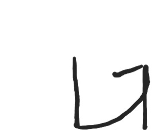

I consider moves to be any action besides the 5 basic attacks that a caracter can perform to affect the gamestate such as
specials are moves that use 0 universal meters ie burst and tension.
they are identified by a blue background in the command list
overdrives are moves that use either 50% of tension meter or 100% of the tension meter and turn the background red ish when performed.
they are identified by a green background in the command list.
a burst is when you press the dust button and another attacking button when your burst meter is full, this releases a wave of energy around you.
there are 2 kinds of bursts blue and orange when in a combo you release a blue burst, when you burst premtivly you release and orange burst.
upon hittting the opponet with an orange burst your tension meter becomes full.
an instakill is the strongest move in the game to perform an insta kill you first need to press punch, kick, slash, and heavy slash down at the same time
this will transform your tension bar in to a timer. perform the imput for the instakill minus the PKSHS. that will upon hitting the oponet let you with that round
when you pause the game and look at the move list you see arrows in circles and wonder what that means. have no fear, most games use that.
look at where the arrow starts, it starts in the middle just as you start motion imputs with no button held. look at what direction the arrow goes, press the keys corosponding to that direction so.
here is a guide
 |
this is know a quarter circle that means to perform this you must press down then transition down to forward (toward your opponet) |
ill try to explain further |
hopefully you learned how to perfrom motion imputs. if not i dont know amy other way to describe it than hold down then transiton into forward attack. if you want any specifics go hereto dustloop.comthere they probably explain better than me